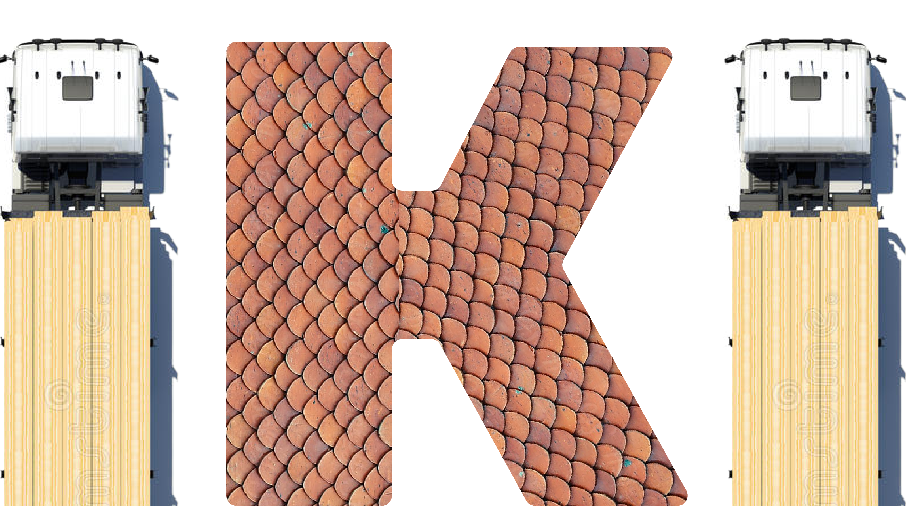

Tentang iKi Logistik
iKi Logistik merupakan perusahaan yang bergerak dalam bidang pengiriman dan logistik yang bermarkas di Jakarta, Indonesia. Terinspirasi dari truck container / truk logistik seperti foto diatas.
|
|
|||||||||||

Tentang iKi LogistikiKi Logistik merupakan perusahaan yang bergerak dalam bidang pengiriman dan logistik yang bermarkas di Jakarta, Indonesia. Terinspirasi dari truck container / truk logistik seperti foto diatas. |
|||||||||||